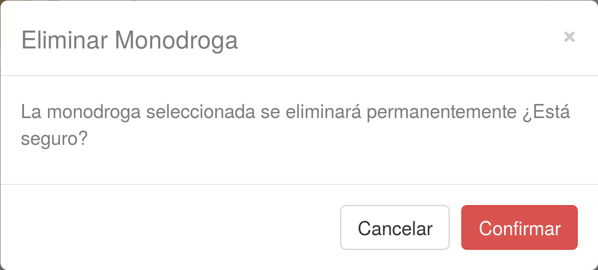
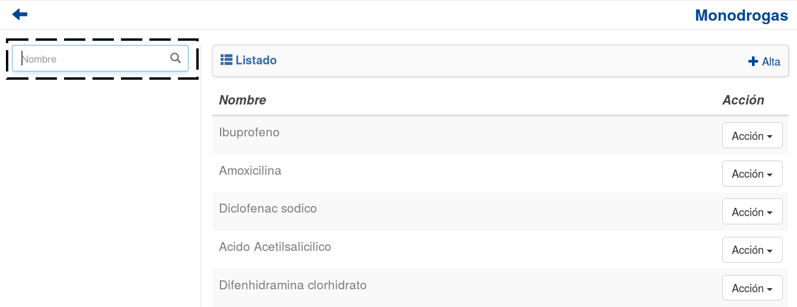

Monodrogas¶
Se presentará una pantalla que contendrá un listado con todas las Monodrogas que se encuentren registradas en el sistema hasta la fecha.

Junto con el listado, se ofrecerán un conjunto de funcionalidades que permitirán manipular estas Monodrogas
Estas funcionalidades son:
Alta Monodroga¶
Si el usuario desea crear una nueva Monodroga, deberá presionar el botón Alta.

A continuación el sistema lo redirigirá a la siguiente pantalla:

En esta parte el usuario se le presentará un formulario y deberá ingresar los datos solicitados para dar de alta una nueva Monodroga.
Atención
El sistema siempre validará que la información ingresada sea correcta. En caso de que los datos ingresados sean incorrectos el sistema lo informará. En este punto, las posibles causas de errores son:
- No se ingresó un nombre de monodroga.
- El nombre de monodroga contiene caracteres especiales o números.
- El nombre de la monodroga ya existe en el sistema.
Una vez completado el formulario, el usuario tendrá dos opciones:
- Presionar el botón
Guardar y Volver.- Presionar el botón
Guardar y Continuar.
El botón Guardar y Volver permite guardar la Monodroga en el sistema y volver a la pantalla
principal de Monodrogas..
El botón Guardar y Continuar permite guardar la Monodroga en el sistema y seguir dando de alta nuevas Monodrogas.
Modificar Monodroga¶
Si el usuario desea modificar los datos de una Monodroga, deberá seleccionar el botón de Acción asociado a la Monodroga y presionar la pestaña Modificar.

Una vez realizado el paso anterior, el sistema lo redirigirá a la siguiente pantalla:

En esta parte al usuario se le presentará un formulario y deberá actualizar los datos asociados a la Monodroga.
Atención
El sistema siempre validará que la información ingresada sea correcta. En caso de que los datos ingresados sean incorrectos el sistema lo informará. En este punto, las posibles causas de errores son:
- No se ingresó un nombre de monodroga.
- El nombre de monodroga contiene caracteres especiales o números.
- El nombre de la monodroga ya existe en el sistema.
Una vez completado el formulario, el usuario deberá presionar el botón Guardar Cambios y el sistema se encargara de actualizar los datos de la Monodroga seleccionada.
Eliminar Monodroga¶
Si el usuario desea eliminar una Monodroga, deberá seleccionar el botón de Acción asociado a la Monodroga y presionar la pestaña Eliminar.

Una vez realizado el paso anterior aparecerá la siguiente ventana emergente (modal):
En esta parte el usuario deberá decidir si confirma la eliminación de la Monodroga o no. Si desea confirmar la eliminación deberá presionar el botón Confirmar, caso contrario, presionará el botón Cancelar.
Nota
Aquellas Monodrogas que cumplan las siguientes condiciones NO podrán ser eliminadas:
- Esten asociadas a un medicamento.
El sistema se encargará de informar al usuario las razones por las cuales la Monodroga seleccionada no puede eliminarse. En dicho caso, el sistema mostrara una ventana emergente (modal) como esta:

Formulario de Búsqueda¶
Si el usuario desea visualizar sólo aquellas Monodrogas que cumplan con algunos criterios en específico, deberá utilizar el formulario de búsqueda.
Este formulario sólo cuenta con la opción de búsqueda simple en base al nombre de la Monodroga.
Nota
Este campo es opcional, de no especificarse ningún criterio de búsqueda el sistema mostrará todas las Monodrogas.
El usuario tendrá que ingresar los parámetros de búsqueda en el formulario, y presionar el botón Buscar. El sistema visualizará aquellas Monodrogas que cumplan con todas las condiciones especificadas.